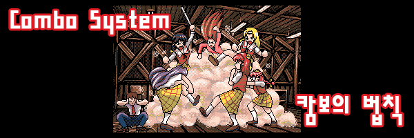

|  |
용어 설명
평타 : 제자리에서 A를 눌렀을때 나가는 공격.
필살기(필살) : 평타를 제외한 모든 공격.
기본 사항
일반 A공격, 투척무기를 제외한 1히트 공격은 일정시간내에 연속해서 명중 시킬 수 없습니다.
따라서 1히트 공격으로 콤보를 이어주려면 계속 다른 공격으로 이어줘야 합니다.
누적 히트수가 8이 (필살기만 사용했을 경우) 되면 드래곤을 제외한 모든 적들은 쓰러지게 되어있습니다.
몹이 쓰러지지 않고 연속적으로 더욱 더 많은 데미지를 주기 위해서는 누적치를 초기화해야합니다.
이 누적치를 초기화 하려면 약 2초정도의 시간이 걸리는데, 일반 공격으로는 초기화 할 수 없으므로 투척무기 또는
마법, 마법도구, 빈칸D키 공격을 이용하게 됩니다.
히트수를 초기화 시킬 수 있는 방법
파이터의 대공기, 시프의 A+B/대공기의 LB오일 공격, 엘프의 대공 서머솔트 킥
- 위 공격들은 공격 후 공중에 떠 있는 시간만큼을 벌어 콤보누적치를 초기화 합니다.
일반 몬스터의 경우 제한이 없으나 보스의 경우 다크 워리어, 하피, 나그파의 경우만 히트수 초기화가 가능합니다.
◎ 파이터의 대공기
- vs 다크 워리어(서 있을 경우)
A 1~4타 후 대공기 2히트시 히트수 초기화
A 5타 → 대공기 2히트 후에 바로 다시 대공기 2히트시 히트수 초기화
- vs 다크 워리어(공중에 떠 있을 경우 - A 5타 → 대공기 2히트로 뜬 경우는 제외)
바로 대공기 2히트시, A 1타 / 슬래쉬 / A 1타 → 슬래쉬 후 대공기 2히트시 히트수 초기화
A 2타 → 슬래쉬 → 대공기 2히트 후에 바로 다시 대공기 2히트시 히트수 초기화
- vs 일반 몬스터 / 하피 / 나그파
A 3타, A 2타 → 슬래쉬 후에 대공기 2히트시 히트수 초기화
A 공격을 제외한 다른 공격으로 6히트 후(예 : 대쉬공격 → 슬래쉬 3회 반복) 대공기 2히트시 히트수 초기화
A 4타, A 3타 → 슬래쉬 → 대공기 1히트 후 적이 땅에 떨어져서 튕기는 시점에 추가 콤보 가능
A 공격을 제외한 다른 공격으로 6히트 후(예 : 대쉬공격 → 슬래쉬 3회 반복) 대공기 1히트후 적이 땅에 떨어져
튕기는 시점에 추가 콤보 가능
◎ 시프의 A+B/대공기의 LB오일 공격
일반 몬스터, 하피, 나그파의 경우 히트되어 몸이 불에 타는 모션이 나오고 땅에 떨어졌다 튕기면 약 2초정도가
흐른것이니 추가타가 가능합니다.
◎ 엘프의 대공 서머솔트 킥
일반 몬스터와 다크 워리어, 하피, 나그파에게 히트 시 초기화 되지만 이어지는 내려찍는 공격이 히트 할 경우
초기화 된 수치가 무효화 됩니다. 일반 몬스터, 나그파의 경우 대공기의 타이밍을 조절하여 내려찍는 공격을
빗나가게 할 수 있지만 다크 워리어, 하피의 경우 내려찍는 공격를 빗나가게 하는 것이 무척 힘드므로
사실상 무한 콤보가 가능한 경우는 일반 몬스터, 나그파로 제한 됩니다.
투척 아이템 : 수량에 한계가 있기 때문에 엘프의 화살을 제외하면 사실상 무한 콤보는 불가능 합니다.
◎ 쓰로잉 해머(throwing hammer), 단검(dagger)/은단검(silver dagger), 화살(arrow)/은화살(silver arrow)
- 콤보에 따라 초기화 시킬 수 있는 수량이 다릅니다(숫자는 히트수).
1발로 초기화되는 콤보 유형 - 필살3
※ 드워프만 해당됩니다.
2발로 초기화되는 콤보 유형 - 평타1 → 필살1, 필살6
※ 평타1 → 필살1 의 경우는, 콤보와 투척무기 사이에 딜레이가 필요하므로 사실상 의미가 없고
필살6은 드워프에게만 해당됩니다.
3발로 초기화되는 콤보 유형 - 평타2, 필살7
4발로 초기화되는 콤보 유형 - 평타3, 평타1 → 필살4, 평타2 → 필살2
콤보에 상관없이 5발 이상 히트시 무조건 초기화
◎ 버닝 오일(burning oil), LB 오일(Large-burning oil), 불화살(burning arrow)
- 일반 몬스터, 하피, 나그파, 프로스트 샐러맨더의 경우 히트되어 몸이 불에 타는 모션이 나오면 초기화 됩니다.
주문 : 역시 시전 횟수에 한계가 있기 때문에 사실상 무한 콤보는 불가능 합니다.
키메라, 맨 스콜피온은 적용되지 않습니다.
매직 미사일(magic missle - 반지 포함)
- 투척무기(해머, 단검류, 화살류)의 초기화 공식과 같습니다.
홀드 퍼슨(hold person)
컨티뉴얼 라이트(continual light)
- 텔'아린, 오거, 만티코어, D.비스트에게는 사용 후 평타가 아닌 필살기로 시작해야 합니다.
또한 스턴상태에서는 타격이 들어가면 반드시 쓰러지므로 그에 맞는 콤보를 넣어야합니다.
아이스 스톰(ice storm)
월 오브 파이어(wall of fire)
클라우드 킬(cloud kill)
- 물론 한번에 죽지 않고 데미지를 입는 적에 한하여 적용.
홀리 워드(holy word)
어스 퀘이크(earth quake)
라이트닝 볼트(lightning bolt - 엘프), 라이트닝 볼트 반지(파이터, 시프, 클레릭, 드워프)
- 샐러맨더에 한해서 추가타 가능.
D키 공격
- 일반 몬스터, 하피, 나그파의 경우 공격이 명중해서 쓰러진 후 튕기는 시점에 초기화 됩니다.
대쉬를 통한 부딪히기
- 일반 몬스터, 나그파의 경우 쓰러진 후 튕기는 시점에 부딪힐 경우 초기화 됩니다.
|
| |
| 이전 페이지로 돌아가려면 Back Space키를 누르세요. |
| 2007 Crassus & legon. All rights reserved. |
| |
|